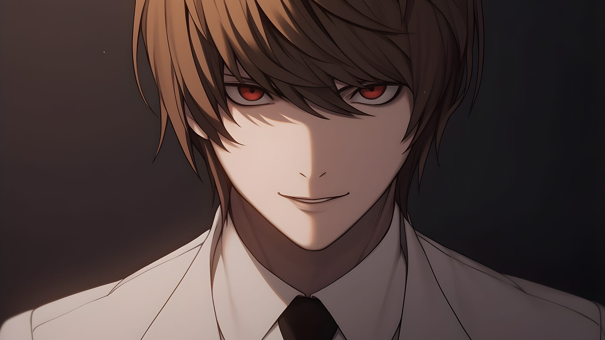
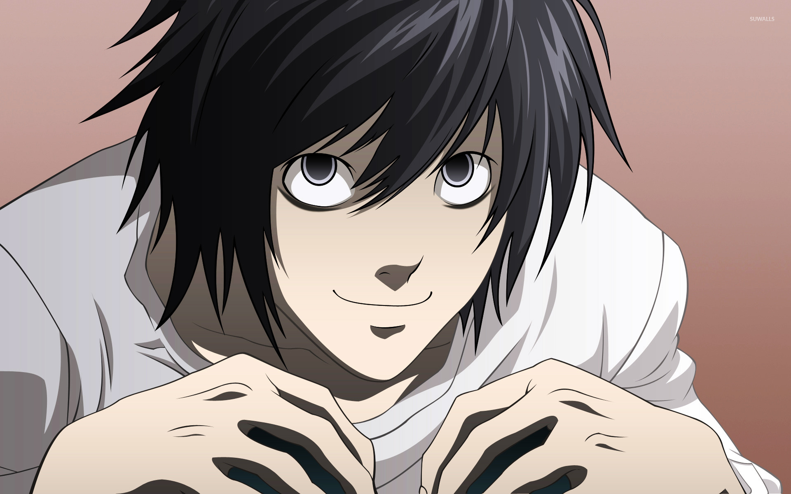
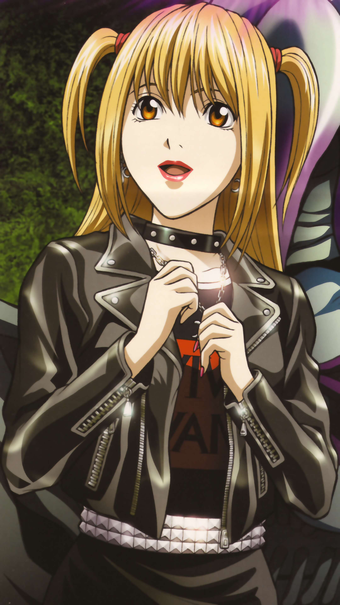
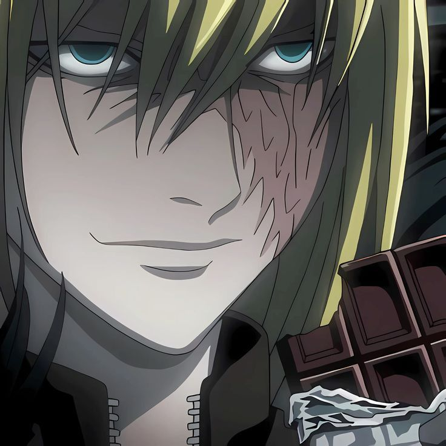
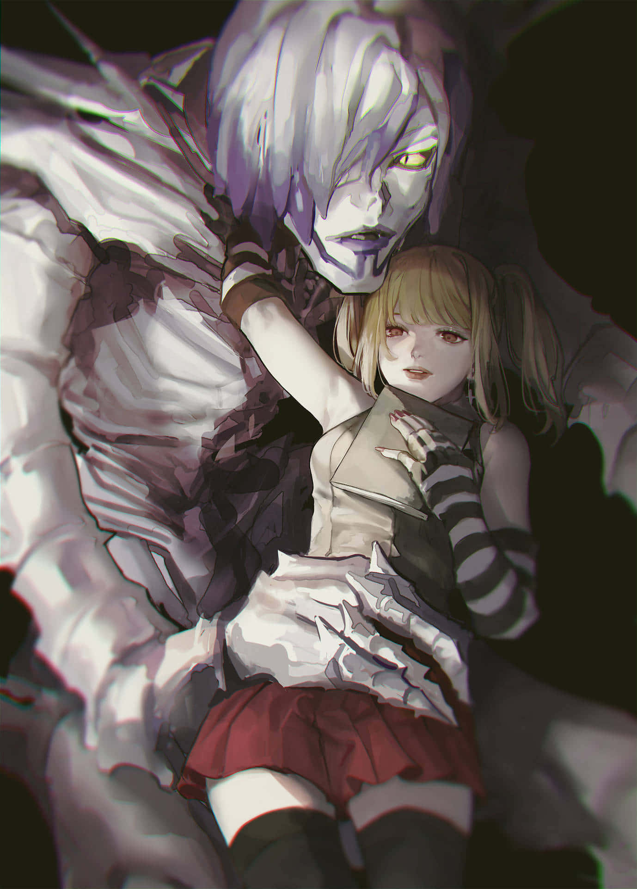

RYUK
Shinigami. Observer. Chaos Enthusiast.

Who is Ryuk?
Ryuk is a Shinigami from the realm of death who drops his Death Note into the human world purely out of boredom. Detached from human morality, he serves as an observer, fascinated by the chaos that unfolds when extraordinary power is placed in human hands.
His actions set in motion the legendary story of Light Yagami, Kira, and the battle for justice that would captivate the world.
The Legacy of Death Note
Death Note is one of the most iconic psychological thrillers in manga and anime history. It explores justice, power, morality, corruption, and the consequences of playing god. Through its unforgettable characters and intricate storytelling, it challenges viewers to question what true justice really means.
Main Characters

Light Yagami
The genius student who becomes Kira, determined to create a new world through absolute justice.

L Lawliet
The world's greatest detective and Kira's greatest rival, known for his unparalleled intellect.
Ryuk
The Shinigami whose curiosity and boredom sparked the entire story.

Misa Amane
A famous idol and devoted follower of Kira, willing to sacrifice everything for love.
Near
L's calm and analytical successor, possessing extraordinary deductive abilities.

Mello
A bold strategist whose aggressive methods complement Near's intellect.

Rem
A compassionate Shinigami whose loyalty to Misa changes the course of the story.
Soichiro Yagami
Light's father and a dedicated police chief committed to justice.
Touta Matsuda
An earnest investigator whose courage and humanity make him unforgettable.